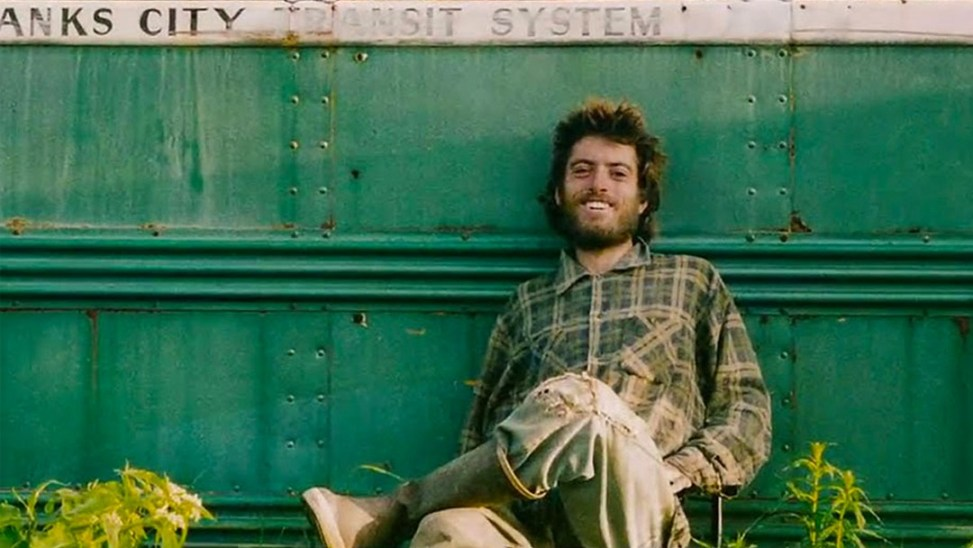
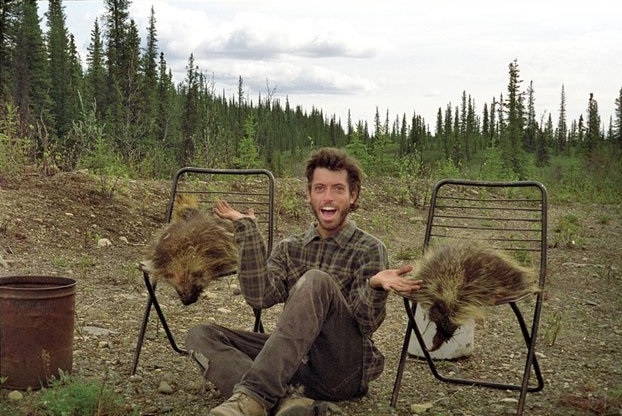

#Into The Wild

In April 1992, a young man from a well-to-do East Coast family hitchhiked to Alaska and walked alone into the wilderness north of Mt. McKinley. Four months later his decomposed body was found by a party of moose hunters.
Shortly after the discovery of the corpse, I was asked by the editor of Outside magazine to report on the puzzling circumstances of the boy’s death. His name turned out to be Christopher Johnson McCandless. He’d grown up, I learned, in an affluent suburb of Washington, D.C., where he’d excelled academically and had been an elite athlete.
Immediately after graduating, with honors, from Emory University in the summer of 1990, McCandless dropped out of sight. He changed his name, gave the entire balance of a twenty-four-thousand-dollar savings account to charity, abandoned his car and most of his possessions, burned all the cash in his wallet. And then he invented a new life for himself, taking up residence at the ragged margin of our society, wandering across North America in search of raw, transcendent experience. His family had no idea where he was or what had become of him until his remains turned up in Alaska.
Timeline of events
- Chris had been born to his mother, Billie, while father Walt was still married to his first wife, Marcia. And two years after Chris was born, Walt McCandless fathered another child with Marcia. Discovering this duplicity infuriated McCandless and made him hate his parents, society and all that comes with it
- After graduating from Emory, he donated his college funds of 24000USD to OXFAM (charity that fight hunger), abondoned his car, burned the last few dollors in his wallet and stepped out to explore the world.
- Chris suddenly realised that he needs a pseudo name and hence "Alexander Supertramp was born"
- He lived in tents outside country eating berries ad small animals, he used to write in his journal about the everyday adventures
- After 2 years of wandering and doing small jobs Chris thaught he had enough resources to start his great alaskan journey.
- While hitch hiking in the Alaskan wilderness and after crossing the Teklanika River, the water never going above his knees, Alex arrived at an abandoned bus sitting on the trail. His journal entry for that date says , "Magic Bus Day!"
- Chris didn't had any problems in the first few days living off from berries and small animals living inside his Magic Bus.
- Chris shot and killed a 600 pound moose, although most of the meat ended up spoiling this was a very big deal to chris. He mentioned in the journal that he regrets killing the moose and considered it as the biggest tragedy of his life. This was the moment he realized that he was way over his head
- He realized that he wants to go back to society after years of isolation.for that he must cross the Teklanika River to get to town. The River has swelled almost five times its original size and has become violent and uncrossable. So he goes back to the bus. He wrotes in his Journal "Alone, Scared"
- He ate poisonous berries mistaking them as edible. The berries clogged his digestive system leading to starvation and finally Death. In one of his last journal entry he wrote "HAPPINESS ONLY REAL WHEN SHARED"
- Aug 19 1992 Chris wrote a note on the back of one of his favourite books before dying. The note reads "I HAVE HAD A HAPPY LIFE AND THANK THE LORD. GOODBYE AND MAY GOD BLESS ALL!"
Quotes from Chris' Journal
SO MANY PEOPLE LIVE WITHIN UNHAPPY CIRCUMSTANCES AND YET WILL NOT TAKE THE INITIATIVE TO CHANGE THEIR SITUATION BECAUSE THEY ARE CONDITIONED TO A LIFE OF SECURITY, CONFORMITY, AND CONSERVATISM, ALL OF WHICH MAY APPEAR TO GIVE ONE PEACE OF MIND, BUT IN REALITY NOTHING IS MORE DAMAGING TO THE ADVENTUROUS SPIRIT WITHIN A MAN THAN A SECURE FUTURE.
- ALEXANDER SUPERTRAMP
TWO YEARS HE WALKS THE EARTH. NO PHONE. NO POOL. NO PETS. NO CIGARETTES. ULTIMATE FREEDOM. AN EXTREMIST. AN AESTHETIC VOYAGER WHOSE HOME IS THE ROAD. ESCAPED FROM ATLANTA. THOU SHALT NOT RETURN, CAUSE ‘THE WEST IS THE BEST.’ AND NOW AFTER TWO RAMBLING YEARS COMES THE FINAL AND GREATEST ADVENTURE. THE CLIMATIC BATTLE TO KILL THE FALSE BEING WITHIN AND VICTORIOUSLY CONCLUDE THE SPIRITUAL PILGRIMAGE. TEN DAYS AND NIGHTS OF FREIGHT TRAINS AND HITCHHIKING BRING HIM TO THE GREAT WHITE NORTH. NO LONGER TO BE POISONED BY THE CIVILIZATIONS HE FLEES, AND WALKS ALONE UPON THE LAND TO BECOME LOST IN THE WILD.
- ALEXANDER SUPERTRAMP
IF YOU WANT SOMETHING IN LIFE REACH OUT AND GRAB IT.
- ALEXANDER SUPERTRAMP
HAPPINESS ONLY REAL WHEN SHARED.
- CHRISTOPHER MCCANDLESS
Go To Top
His beliefs

Do we have faith?.
One of the central beliefs that Chris McCandless held in his life as he journeyed around America was that he should be independent and self-reliant, based on Emerson's concept of self-reliance. Chris saw anything or anybody who might lure him into being involved with civilisation as being dangerous because he felt it would erode his independence and his ability to trust his own instincts. This is why he deliberately took steps to remove himself from those who would love him, care for him and try and stop him from his aesthetic quest to walk into the wild. Note how the following quotefrom the Book (Into The Wild) develops this belief that Chris has:
McCandless was thrilled to be on his way north, and he was relieved as well—relieved that he had again evaded the impending threat of human intimacy, of friendship, and all the messy emotional baggage that comes with it. He had fled the claustrophobic confines of his family. He’d successfully kept Jan Burres and Wayne Westerberg at arm’s length, flitting out of their lives before anything was expected of him. And now he’d slipped painlessly out of Ron Franz’s life as well.
At this point in the text, the author establishes that Chris McCandless saw the very generous and touching offer that Ron made to adopt him as his son as yet another "threat" to his determined independence. This is yet one other example of how he deliberately shuns others and keeps them away from him as they begin to care for him and love him, as he saw such relationships and dangerous and counterproductive. Chris also believed that as he journeyed around he should not carry with him any equipment or resources that other backpackers and journeyers would consider essentials, such as a compass, a rifle or a map. For him to be self-sufficient meant being reliant on his wits alone and not any item of equipment that could save him.
Go To Top
Alexander Supertramp!!!

I am half way through completing the book, already watched the movie and hell it was inspirational. Although i believe we can't cut off from the society for forever but we do need a break or two from it for a while. Our minds have been confined to think about things that don't really matter. Money, resources, religion, society. At the end none of that matters. Better to live a short life and be yourself rather than pretending to be someone to please the society and live a long miserable life
Life lessons i learned from his story :
1. Keep your goal in sight - Don’t give up what you want for what you want right now.
Even with a destination that would take him down a path fraught with adversity, Chris’s dream was unwavering. His yearning to find truth and solitude in a world where little exists led him directly into immense obstacle after obstacle.
It is so easy for us to find excuses to not follow through on our dreams. There are always a million reasons not to do something. Keep your dreams in sight and if you should fail, try and try again. Do not concede, and do not compromise to take the easier path and settle for a portion of your dream just because it’s the easiest path right now.
2. Material things are just that, material things -
McCandless came from a well-to-do background. Transitioning from a life full of privilege and wealth into that of a homeless man with only the shirt on his back was a great endeavor in itself and it’s hard to believe that it was a voluntary choice. We live in a society that determines your personal worth based on what you own. It is so difficult to let go of the mindset that reminds you “I need to own things and the more things I own the better person I am”. We’ve been programmed to think material possessions make us happy. But to obtain those things we must give up some of ourselves, our time, and our space. Letting go can change your life and coming to the realization that you are more than the total of your material possessions is liberating.
3. Don’t sweat the small stuff
….and yes, you guessed it, it’s all small stuff - In this great big world, we are all but a speck of dust in the grand scheme of things and so are our problems. Always ask yourself “Will this matter next week, next month, or ten years from now?” Stress and worry is the thief of happiness, so let it go.
4. Find happiness in your struggles -
Chris’s journey was an ambitious struggle from start to finish. In the end your struggles were all just a part of the journey. Revel in the hardships that lend to your expedition and become part of your character.
5. Don’t worry about other people’s opinions of you or your dreams -
Unfortunately, everyone is entitled to an opinion. If McCandless had listened to the opinions of others he would undoubtedly never have sought a life of solitude in nature. In fact, it is very likely that the opinions of society had a lot to do with why he chose to desert society in the first place. Never allow the thoughts and negativity of others control you and your actions.
Fahad Khan
{kind=link}
{kind=link}
{kind=link}
{kind=link}